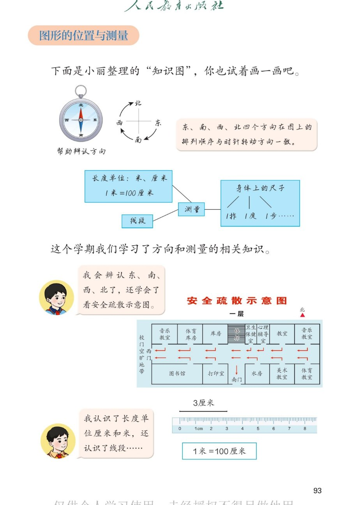

🔊 六、复习与关联 · 课本第 93 页 · 图形的位置与测量
人教版《数学》二年级上册 · 有声图文带读 · 先想后看解析 · 东南西北 · 米和厘米 · 看疏散示意图
题数
6
认知
2
强化
3
拓展
1
本页重点
方向顺时针排序 · 1米=100厘米 · 会看平面示意图
🎧 分两步学：
① 解析教材图片
——纯声音读图，读到哪一块哪一块闪动提示；关键处先倒计时让你思考，再在图片下方给出解析并朗读。
② 分层提问练习
——六道分层题（认知 / 强化 / 拓展），先思考再展开解析、朗读参考答案；这一步不再回到图片。
也可以随时点任意一句话、图上任意一块单独听；点课本文字卡还会展开答案。
教材图片（点块听读，读到哪块哪块闪）

📖 人教版《数学》二年级上册 · 课本第 93 页 · 图片仅供个人学习，版权归人民教育出版社所有
🤔 想一想（点我可跳过）
课本的文字（点句子：听读 + 看答案）
方向
四个方向怎样排才不会乱？
看答案 ▾
按
顺时针
记：东 → 南 → 西 → 北 → 东；
口诀：
上北下南、左西右东
；
💡 转的方向和时针一样，就叫顺时针。
测量
长度单位怎么选？
看答案 ▾
1米=100厘米
；
短的（铅笔、手掌宽）用
厘米
；
长的（教室、旗杆、身高）用
米
；
💡 线段：直、有两个端点、能量长度。
身体尺
身上有哪些尺子？
看答案 ▾
1拃
：张开手，拇指尖到中指尖；
1庹
：两臂伸平的总长；
1步
：走一步前后脚的距离；
💡 先量好自己的身体尺，估值才有准头。
疏散图
怎么看安全疏散示意图？
看答案 ▾
① 找
指北针
定方向；② 找
自己的位置
；
③ 顺
红色箭头
找最近的出口；
💡 图上方向和生活中的方向对起来。
分层提问练习（先想后看解析）
🧭
认知
面向北站着，背后、左面、右面各是什么方向？
看解析
🤔 想一想
解析：
背后是
南
；
左面是
西
，右面是
东
。
📏
认知
1 米等于多少厘米？2 米呢？
看解析
🤔 想一想
解析：
1米=
100
厘米；
2米=
200
厘米。
⚖️
强化
旗杆高 13（ ）、手掌宽 7（ ）、一步长 35（ ），各填什么单位？
看解析
🤔 想一想
解析：
旗杆 13（
米
）；
手掌宽 7（
厘米
），一步 35（
厘米
）；
💡 用身体尺比一比再选单位
🚪
强化
紧急疏散时，看示意图先做什么、再做什么？
看解析
🤔 想一想
解析：
先看
指北针
定方向；再找
自己的教室
；
最后沿
红色箭头
找最近的门。
📐
强化
直尺上从刻度 0 到刻度 3 的一段长多少？怎么读？
看解析
🤔 想一想
解析：
从 0 到 3，长
3 厘米
；
不从 0 开始时：终点刻度-起点刻度；
💡 两个刻度一减就是长度
🌈
拓展
用身体尺估一估教室门的宽，说说怎样估得更准。
看解析
🤔 想一想
解析：
先用
拃
量：约 10 拃，1 拃约 15 厘米；
估出约 150 厘米，再用米尺
验证
；
🌈 估一估 + 量一量，双保险
① 解析教材图片
② 分层提问练习
⏹ 停止
纯声音 + 高亮跟随 · 想好才出解析
← 返回导航